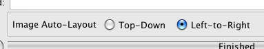

Essential Viewer Tab
Getting Started
This simple tab is used to send a snapshot of - publish - the Essential model to the Essential Viewer reporting service. The reporting service provides a web-based environment for browsing the published model and viewing the results of various reports that are the result of complex analysis of the model.
Using the Viewer Tab
The Architecture Report Tab is very simple to use.
To add it to your Protégé project, select Project->Configure... and select the checkbox for the EasReportTab entry in the list. This Tab will then be added to your project.
Once it has been added to your project, the two main controls of the Tab are:
- Essential Viewer:. This specifies the location, on the network, of the Essential Viewer Report Service to which you wish to publish. This should already be configured to the location of your reporting service but you can override the configured URL if you wish to publish your model-snapshot to an alternative reporting service.
- Optionally and if required by the
Report Service:
- Username: Your user name for accessing the Report Service
- Password: Your password for accessing the Report Service
- Send Graph Images. If set, creates a screenshot of each graphical model in the Protege repository and sends it to the Essential Viewer.
- Publish Repository. When you push this
button, the Tab will:
- Take a snapshot of your enterprise architecture model.
- Check for authentication requirements and login using your credentials, if needed.
- Send this snapshot to the reporting service, defined by the URL. If the Tab cannot make a connection to the Report Service, it will retry up to 3 times before giving up and reporting a failure.
Status messages are shown when the sending process has completed. Depending on the size of your model, this make take a few minutes.
In the unlikely event of a failure, a message will be shown.
- That the tab failed to send the message -
in which case the Tab has failed to successfully invoke the Essential
Report Service, or that the service itself has encountered a problem. The
likely reasons for a failure are:
- The server at the specified URL is not responding. The server is unavailable, please contact your system administrator.
- The URL of the Essential Viewer Report Service has been incorrectly specified. The server is responding but cannot find the specified service. Check your URL details.
- A user name and password was required in order to use the Report Service. If you have provided a user name and password, please check that you have correctly entered your details.
- That the tab has failed to take a snapshot of the model.
In any of these cases, please contact your system administrator.
Configuration
The tab is configured by its properties file, reporttab.properties that is located in the plugin folder. You can adjust the GUI text and some other look and feel elements.
The Essential Architecture Manager Report Tab has the following configuration options:
- The default URL for the Essential Viewer Report Service: reporttab.url.default
- The length (in columns) of the URL control: reporttab.url.columns
- The name of the Tab as it appears in Protégé: reporttab.tab.label
- The suffix to use to contact the image receiver service, by default "Images": reporttab.images.url
- A java.text.SimpleDateFormat formatting pattern to control the formatting of the timestamp tag value in the report XML snapshot. This must be a valid
SimpleDateFormat pattern string which must result in a valid XSD DateTime value:
reporttab.xml.datetimeformat. e.g. yyyy-MM-dd'T'hh:mm:ss
By default a YYYY-MM-DDThh:mm:ss formatting is produced.
Enabling the Tab
Select the Tab from the Project->Configure... menu by choosing the EasReportTab entry from the list of Tab plug-ins.
Generic XML Export from Protege
The EasReportTab plug-in can be used in any Protege project as a generic XML export capability and will export all instances that are defined in your project. To receive the XML, all you need to do is provide an HTTP server application, e.g. a Servlet, that can receive the XML document via an HTTP Post.
Use the Essential Viewer field to specify the URL of your HTTP Server.
The XML export is formatted according to the schema of the Protege Experimental XML format, with some extensions by the Essential Project team.
From version 2.4, a snapshot of the graphical models is sent to Essential Viewer as a set of image files. When running Protege in Multi-User mode, an option to select the preferred automatic layout of the images is shown. The widget will use the selected auto layout as Protege does not store the layout properties of the GraphWidgets in Multi-User mode for well documented reasons.
Essential AutoText Widget
Purpose
When the Essential Architecture Meta Model was first implemented in Protégé, we found that many of the fields that we needed, e.g. the names of many artefacts such as Architectures needed to be specified by hand but always followed a pattern based on the values of other slots on a form, which seriously affected productivity. To solve this issue, we created the AutoText widget for String Slots to automatically generate string values from a pattern based on the values of other slots and static strings, e.g. if we need a slot to have the value which is made up from the value of a slot, SlotA, the string " and " and the value of SlotB, the AutoText widget enables us to define a pattern, such such that if SlotA = 'cats' and SlotB = 'dogs', we get a value in the AutoText of 'cats and dogs'.
Installation
The AutoText widget is installed as part of the Essential Architecture Manager Report Tab plug-in, in the Essential Widgets package of the plug-in. To check that it is correctly installed, open the Protégé Forms tab, select a field on the form that is currently using a TextFieldWidget and use the drop-down box to select an alternative slot widget. The AutoText Widget should be in the list of options.
How to configure the AutoText
Creating the AutoText pattern
The AutoText widget works as a Slot Widget for any String slot in your project. To use the AutoText for one of your String slots,
- Go to the Form for the class that is going to have the AutoText applied to it
- Select the field for the string that will be AutoText
- Choose the AutoText widget from the list of widget options for this field.
- Fill in the static string values to use - all are optional. This value will be used in every AutoText that is generated for this field. E.g. if you set the prefix to "Protege", every AutoText instance for this field on this form, will start with "Protege"
- Select the slots to use in the pattern. This will use the string value shown in that slot to build the AutoText and is updated dynamically as this slot value changes. In the case where you choose an Instance Slot, the value that is used depends on what the display slot is for that instance.
What sort of Slots can be used in the AutoText pattern?
Any slot-type can be used as part of the AutoText pattern, including:
- Strings
- Integers and Float
- Instances
- Symbols
- Classes
- Booleans
- Any
- Strings that are themselves defined by an AutoText Widget.
Known Issues
The AutoText widget has been designed to work from the Graphical User Interface forms, as an aid for users when completing class Instance forms. It does not use any listeners on the Protégé project knowledge-base. This means that fields using the AutoText widget are only updated when the form for the Instance is visible - either in the Instance Browser or as a pop-up form. In scenarios where Instances have been created via the Protégé API, e.g. via an import from an external repository, the AutoText pattern will not be applied until the Instance is viewed or browsed.
Very occasionally the AutoText may not update when an Instance is viewed. In this case, update any of the fields on the form - the description field is useful - to force an update event, and the AutoText will operate as expected.
End user licensing
Copyright ©2006-2020 Enterprise Architecture Solutions Ltd. This Protege plug-in is part of Essential Architecture Manager, the Essential Architecture Meta Model and The Essential Project.
Essential Architecture Manager is free software: you can redistribute it and/or modify it under the terms of the GNU General Public License as published by the Free Software Foundation, either version 3 of the License, or (at your option) any later version.
Essential Architecture Manager is distributed in the hope that it will be useful, but WITHOUT ANY WARRANTY; without even the implied warranty of MERCHANTABILITY or FITNESS FOR A PARTICULAR PURPOSE. See the GNU General Public License for more details.
You should have received a copy of the GNU General Public License along with Essential Architecture Manager. If not, see http://www.gnu.org/licenses.
Powered by the:
version: 4.2.1
released: January 9 2020
For more information see:
- Essential Project website: http://www.enterprise-architecture.org
- EAS website: http://www.enterprise-architecture.com
©2006-2020 Enterprise Architecture Solutions Ltd
Essential Viewer Tab is part of the Essential Project, sponsored by EAS.